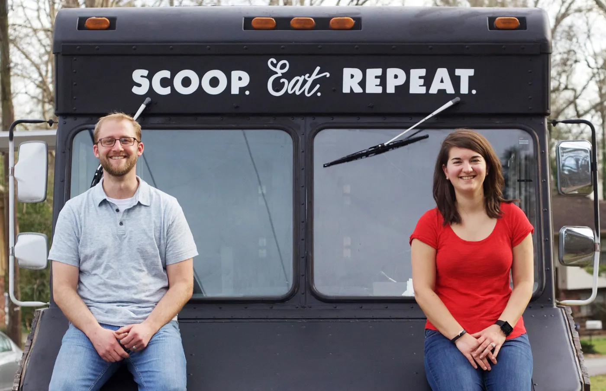
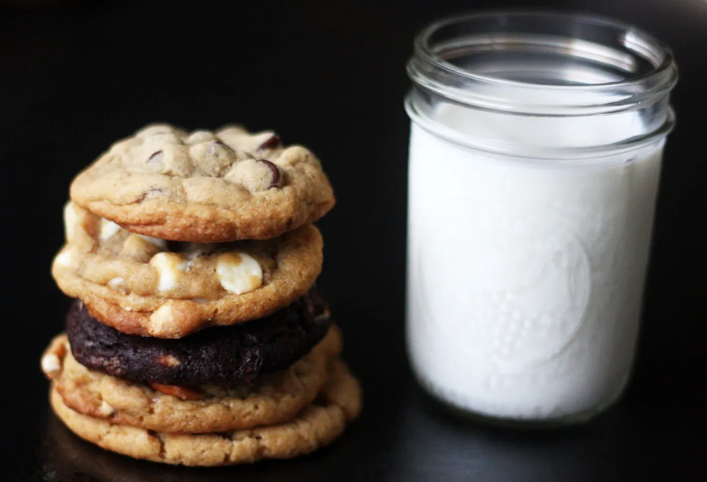
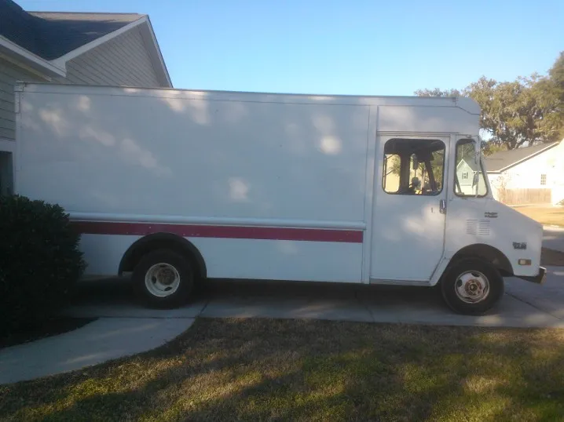

Boy meets girl. Girl flirts with boy. Boy asks girl out. Boy and girl fall in love, get married, and drive 500 miles away from home to buy a 1990 Chevy P30 step van to convert it into a food truck… Okay, maybe that last bit isn't part of your typical same, old story, but that's exactly what happened with Ben and Wendy, or as their closest friends and family now call them, Bendy.


Wendy
Wendy grew up in Birmingham, Alabama, where she began cooking as a little girl. The play set kitchen she got for her birthday one year was just the beginning. Her love for cooking only grew as she got older, and after college, Wendy landed her dream job working in the Oxmoor House test kitchen where she tested and developed recipes for Cooking Light and Southern Living cookbooks.
Long before Wendy met Ben, Wendy and her friend Jessica dreamed of owning an ice cream sandwich shop called Cookies & Cream, and they would get together to churn ice cream and bake cookies in their free time.

Ben
Meanwhile, Ben grew up in "Small Town U.S.A.," also known as Roanoke, AL, about an hour's drive north of Auburn. Most of the cooking Ben did as a kid involved making mud soup by digging holes in the back yard and filling them with water from the hose pipe. Needless to say, Ben had to clean himself up a little before he met Wendy.
The two actually first met at Ben's apartment where Ben and some friends were leading a small group Bible study. Wendy attended once and never came back (so much for love at first sight). Eventually, though, their paths crossed again on a mission trip to Haiti.
Long story short
April 2014
Bendy tied the knot, and they even served their homemade cookies with milk at the wedding.
Summer 2014
Friends came over to taste test Wendy's recipes, loved the cookies and ice cream, and encouraged them to name the business Bendy's Cookies & Cream.
January 2015
C.C., the soon-to-be food truck, joined their family.
2015
Countless hours of prayer, planning, Wendy recipe testing, and Ben getting his hands dirty again renovating the truck.
Early 2016
Bendy's Cookies & Cream began serving on streets and at events all across Birmingham, AL.
Three years later
We opened our storefront in Cahaba Heights.
Today
Two shops, in Cahaba Heights and Trussville, and the food truck still serving at events.
C.C., the 1990 Chevy P30 step van, with Wendy in the window and Ben out front.
For Wendy's dad
We dedicate this business to Wendy's dad who passed away from cancer in 2012. He would be so proud to see us start a business and would have been our #1 taste tester!
Thank you
A special thanks goes out to Wendy's childhood best friend, Jordan, for designing the logo and graphics; to Ben's friend, Daniel, for helping install wiring in the truck; and to Wendy's high school friend, Kelly, for website design.
This would not be possible without God's blessing and the support of friends and family.